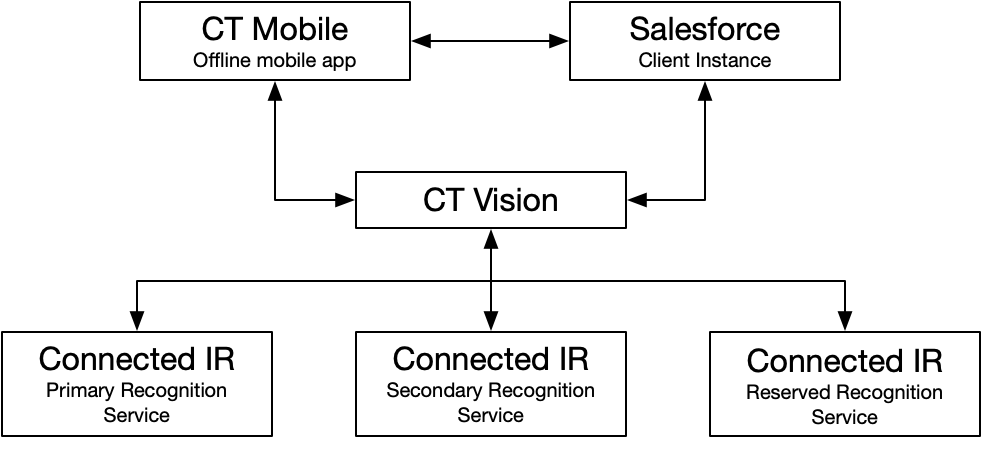

CT Vision IR is a comprehensive solution to recognize images while working in the CT Mobile app for iOS users. CT Vision IR includes the server application responsible for routing, storing, and processing photos, enriching recognition results supplied by the connected image recognition providers. CT Vision IR allows working with several IR providers with no additional settings on the CT Mobile side—switching between the providers is carried out unnoticeably.
CT Vision IR supports integration with EasyPicky and allows launching applications on the Activity records, process, and store results in the CT Mobile app local database.
